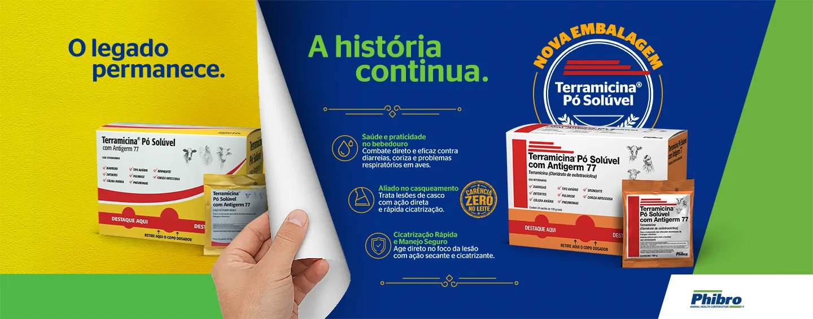
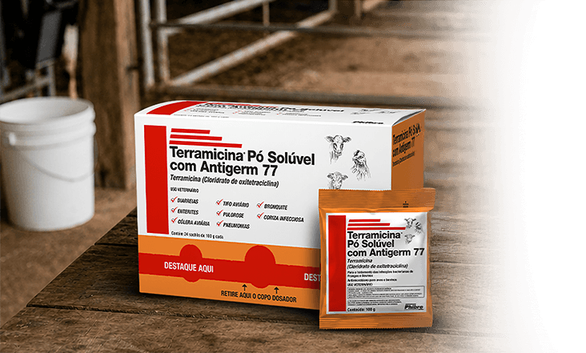
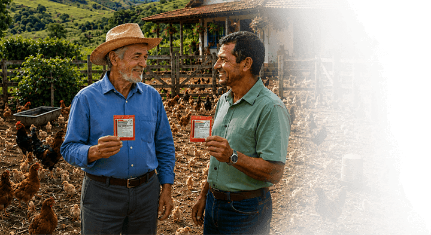
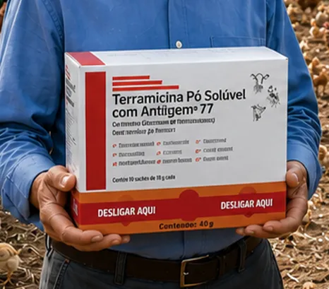
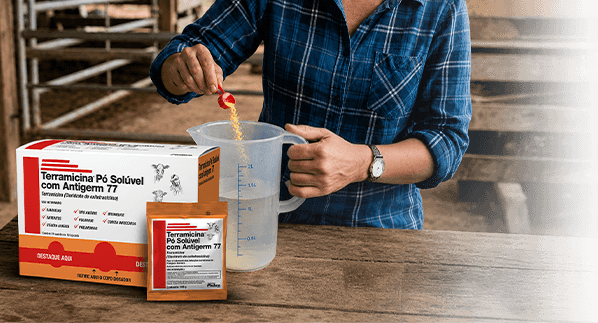
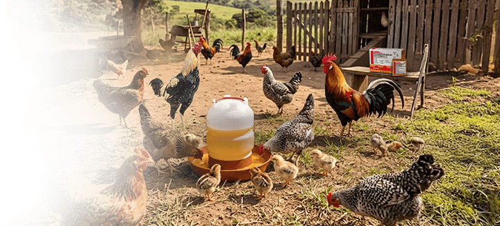
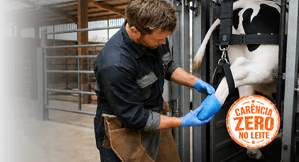
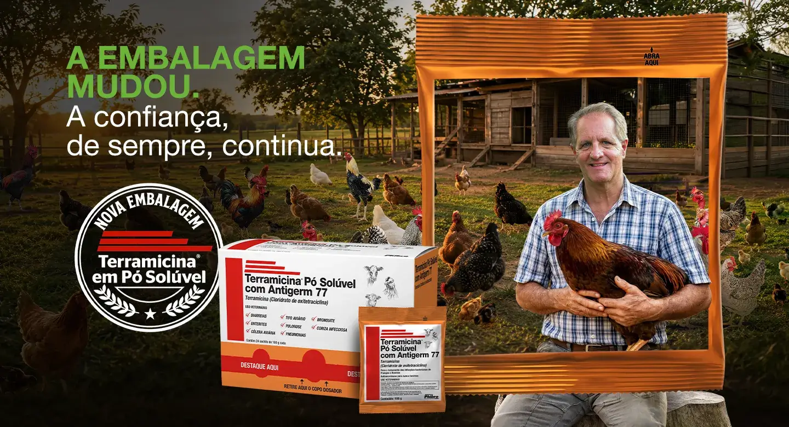

A Terramicina® Pó Solúvel é o antibiótico de referência à base de cloridrato de oxitetraciclina com Antigerm 77. Uma solução completa, agora sob a excelência global da Phibro Saúde Animal.
Ver Indicações
Há décadas, o produtor rural sabe que pode contar com a Terramicina® Pó Solúvel nos momentos decisivos do manejo.
Desde seu registro em 1959, a Terramicina® Pó Solúvel tornou-se sinônimo de eficácia no campo.
Sua fórmula robusta foi desenvolvida para combater infecções em diversas espécies, garantindo saúde e produtividade ao pequeno produtor.
Hoje, a Phibro Saúde Animal honra esse legado, trazendo inovação e modernidade sem abrir mão da fórmula original que você já conhece e confia.
Assista ao manifesto da nova fase da Terramicina® Pó Solúvel com a Phibro

Conheça os detalhes do novo visual Phibro
O impacto real na saúde do seu rebanho

Adicione a Terramicina® Pó Solúvel na água do bebedouro conforme a dosagem da bula.
Certifique-se de que todas as aves tenham acesso à água medicada.

Acompanhe a melhora clínica e respeite o período de tratamento.

